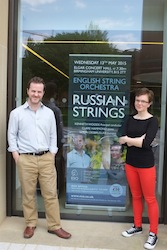
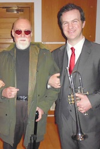
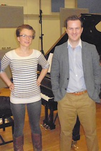

As 'Fanfare', trumpeter Simon Desbruslais and pianist Clare Hammond are quickly establishing themselves as an adventurous and distinctive duo with a strong commitment to new music. Individually, they have received international acclaim for their ever-growing discography and engaging performances, and in 2011 they decided to form a musical partnership in order to promote and expand repertoire for trumpet and piano.
To date, Fanfare have commissioned over six new works for trumpet and piano, from composers including John McCabe and Edwin Roxburgh, as well as three new double concertos. In May 2015, they gave the world-premiere of Geoffrey Gordon’s ‘Saint Blue for Piano, Trumpet & Strings’ and performed Shostakovich’s Concerto for Piano, Trumpet & Strings with the English String Orchestra. They recorded Gordon's concerto, alongside another new double concerto by Toby Young, for Signum Records in September 2015.
Click here to view Simon Desbruslais' individual website.
|  |  |  |
Click here to view more photos.
Excerpt from Saint Blue by Geoffrey Gordon with the English String Orchestra
with double bassist Stephen Warner and conductor Ken Woods
(Live recording, May 2015)
Excerpt from Anaphora by Tomas Yardley (April 2014)
Excerpt from the first ever period trumpet recording of Hindemith's Sonata (April 2014)
Recorded on a rotary B flat trumpet by Carl Lehmann (Hamburg, early 20th century) for the Bate Collection at Oxford University.
Excerpt from Arban's Variations on 'The Little Swiss Boy' (April 2014)
Period recording on a B flat 'Echo' Cornet by W Brown & Sons (London, 19th century) for the Bate Collection at Oxford University.